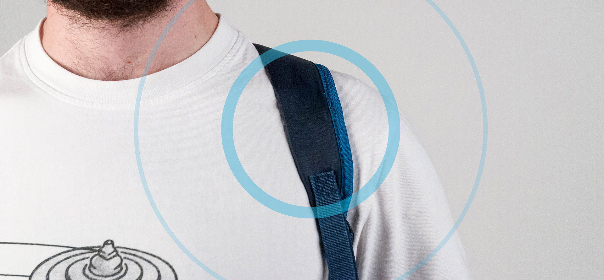
TEAM MEMBERS
Nicolò Azzolin
Andrea Zito
Zhu Tao
ROLE
design, hardware & software coding
COURSE
Hardware & Software for Design, 2019
Politecnico di Milano, Milan
Magellan Backpack
A backpack guiding you towards your destination
QUICK NAVIGATION
Backpacks are used to store and carry things around.
Magellan makes the backpack a new travel companion that shows your way through the city streets.
Presentation video
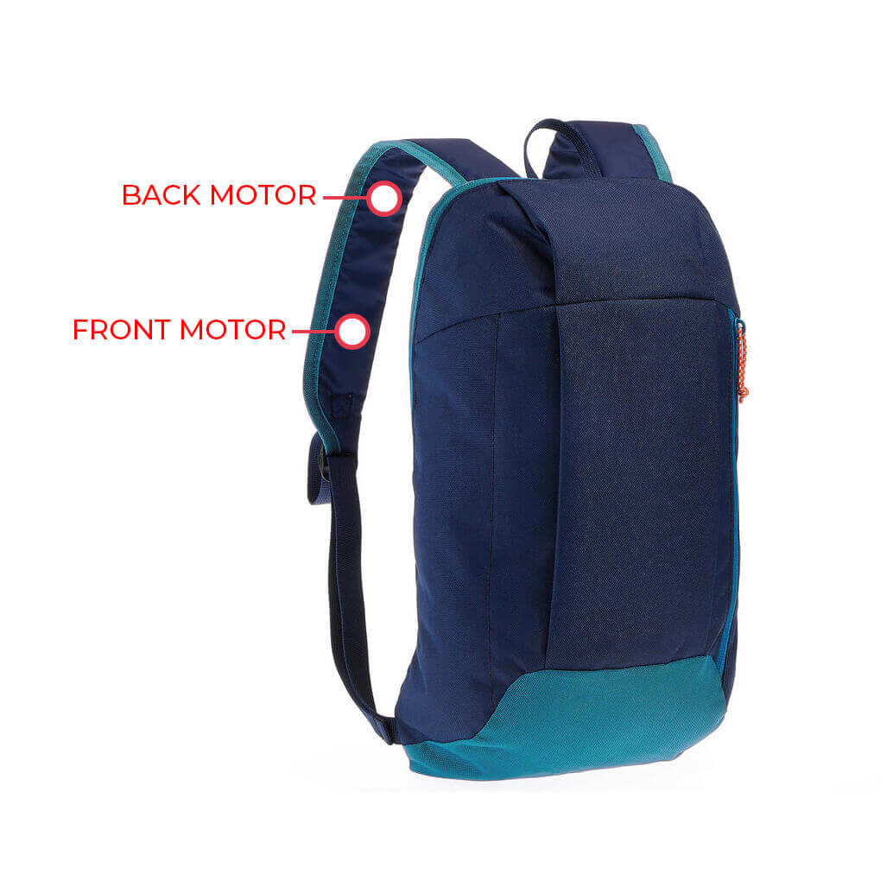
The two vibration motors on each shoulder strap will indicate your next turn, so you can put your eyes away from your phone while you're on the road.
We focused our research on the activity of moving around a city, by walking and by bike, and we got to our conclusion: relying on watching the upcoming directions in a navigation app can be dangerous. That's why we chose to use a vibration feedback to avoid saturating other senses such as sight or hearing, which are crucial to keep awareness of the surroundings.
User Journey
{kind=link}
User Flow
{kind=link}
Process Flow
{kind=link}
After pairing the navigation app to the ESP32, the navigation app will listen for the distance from upcoming maneuver value. If this value goes beyond a set threshold (in this case 25m), the navigation app will register the upcoming maneuvers to the ESP32 BLE characteristic, which will then trigger the vibration signals depending on the bytes sent.
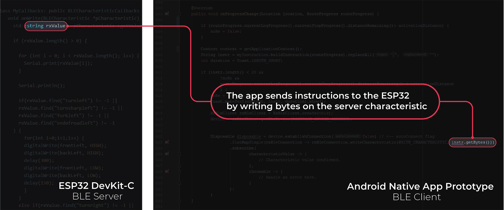
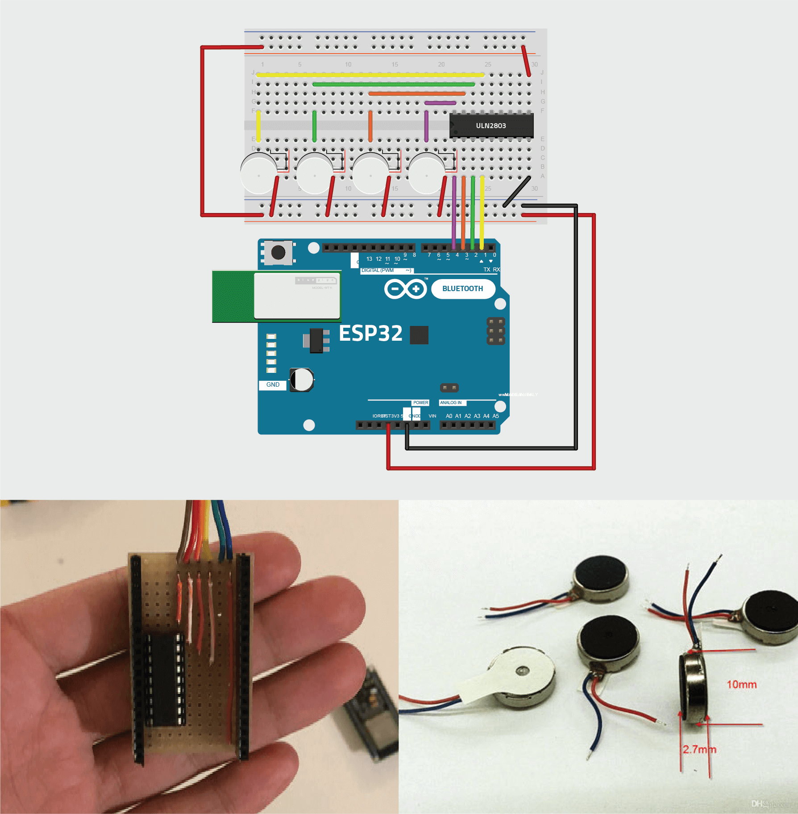
The Electronics
ESP32 Board DevKit-C
3.3V Vibration Motors
ULN2803A Darlington Transistor Array
5V power supply (USB Power-bank)
Development process
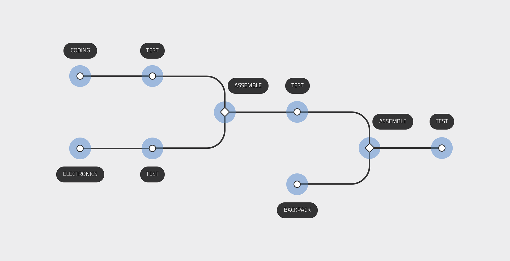
Problems & Solutions
Power supply issues
Using a power-bank would grant voltage regulation through the micro-usb port. This type of power supply may be used in production since people could use their one to power the device while travelling.
Wire connections issues during the travel
Breadboard connections and cables are too unstable for a backpack. We used a soldered prototyping board with flexible cables.
Vibration motor position
We had multiple test to find the best position to differentiate the perceived signal location.
Programming a native application
We used an SDK (Mapbox SDK) for faster prototyping and immediate access to direction information.
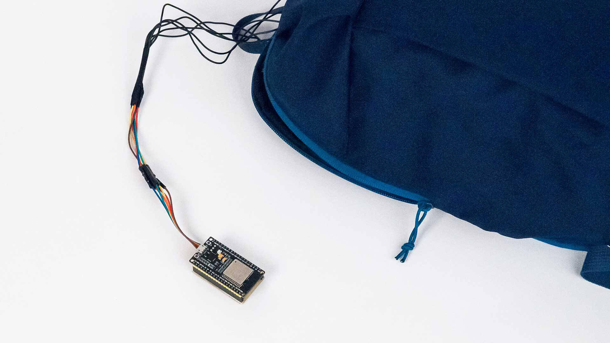
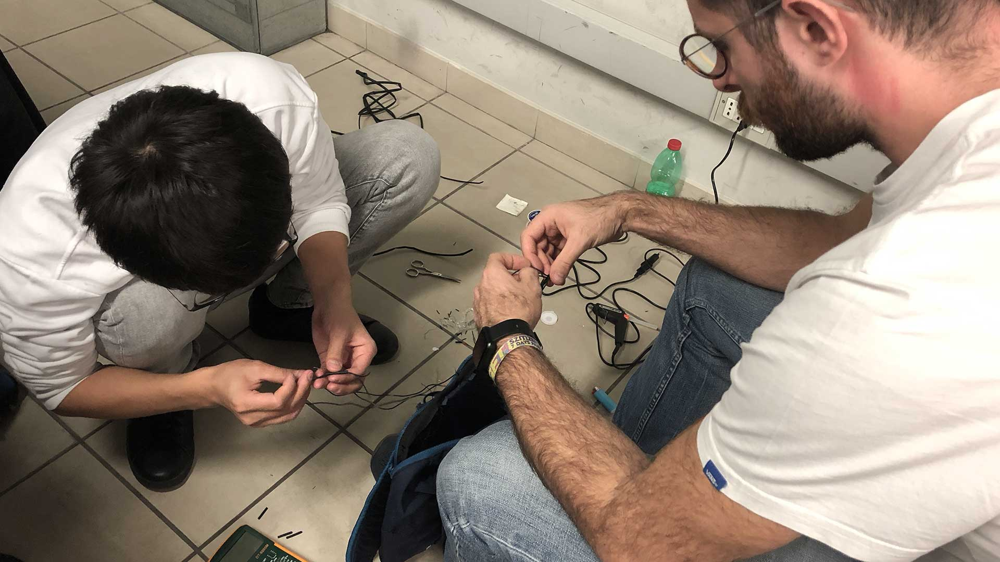
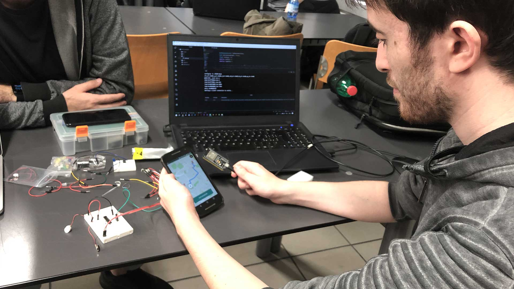
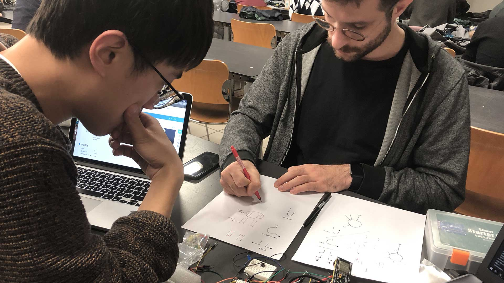
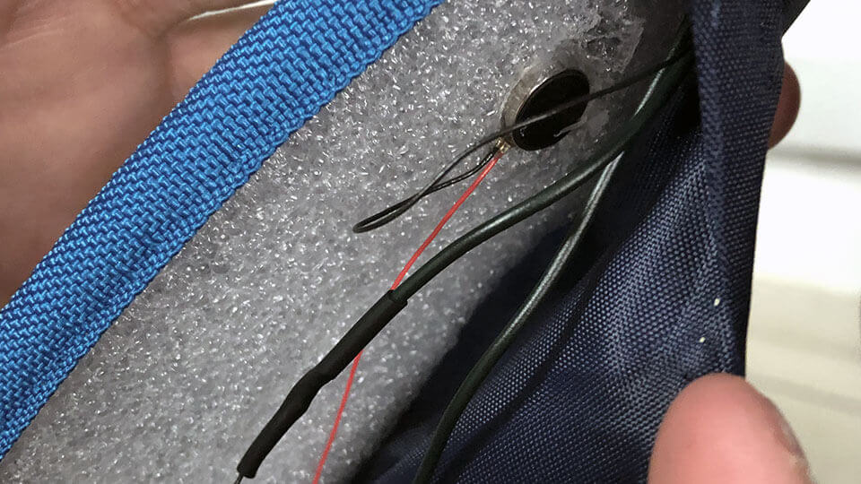
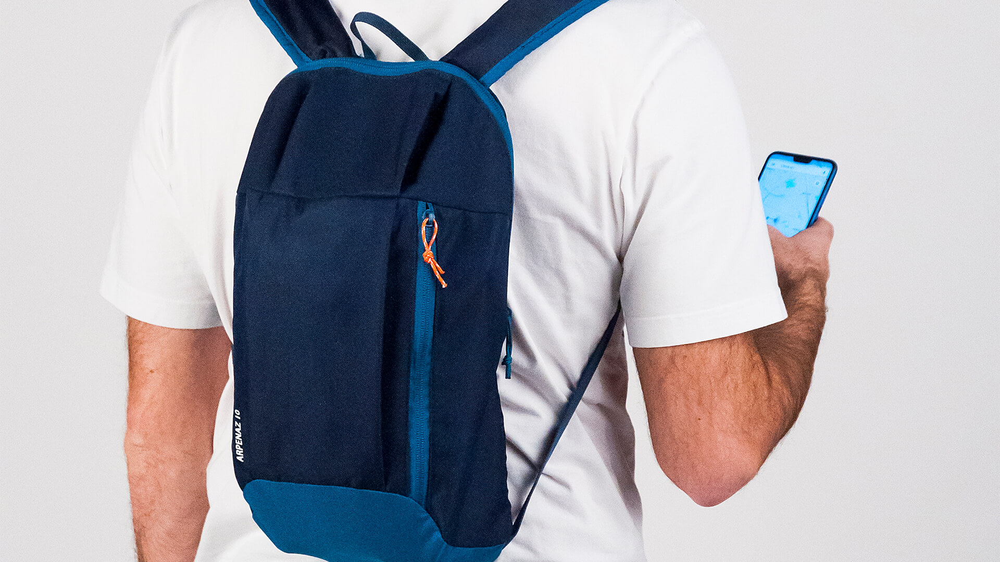